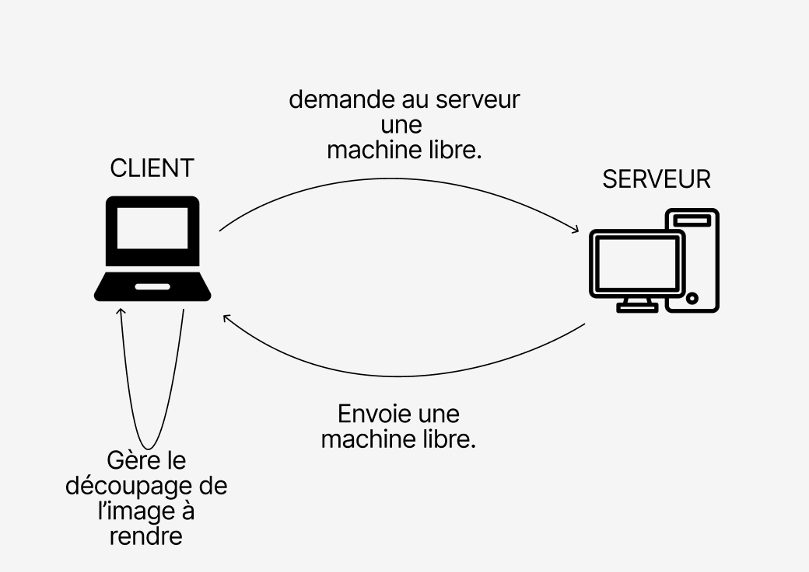

Mise en situation
Le client possède une image qu'il souhaite rendre. Cependant, le rendu de celle-ci prend plusieurs minutes à se faire. Le client décide de faire effectuer le rendu de son image en utilisant plusieurs machines simultanément.
Fonctionnement
Le client est un programme Java qui utilise le service de rendu de raytracing distribué pour effectuer le rendu d'une image. Voici ce que fait le client dans les grandes lignes :
- Le client se connecte au serveur de rendu distant en utilisant une connexion RMI (Remote Method Invocation).
- Une fenêtre graphique est créée pour afficher l'image résultante.
- Une scène est initialisée à partir d'un fichier de description spécifié.
- L'image est découpée en plusieurs morceaux pour permettre un rendu simultané sur plusieurs machines.
- Des threads sont préparés pour chaque morceau de l'image découpée.
- Chaque thread récupère une machine de calcul disponible du serveur de rendu et effectue le rendu de sa partie de l'image.
- Une fois le rendu terminé, l'image partielle est affichée dans la fenêtre graphique.
- Si une erreur de connexion se produit pendant le rendu d'un morceau de l'image, la machine de calcul correspondante est supprimée du pool disponible.
- Après que tous les threads ont terminé leur travail, le programme affiche le temps d'initialisation des threads et le temps d'exécution total.
En résumé, le client coordonne le rendu de l'image en utilisant plusieurs machines en parallèle pour réduire le temps de rendu global.
